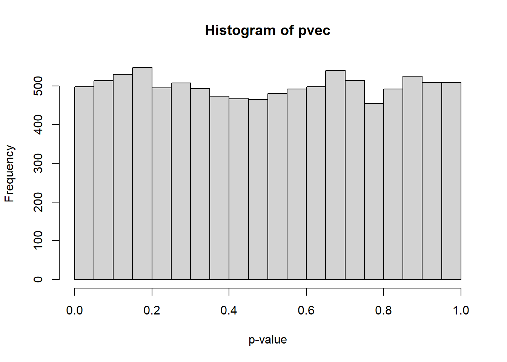
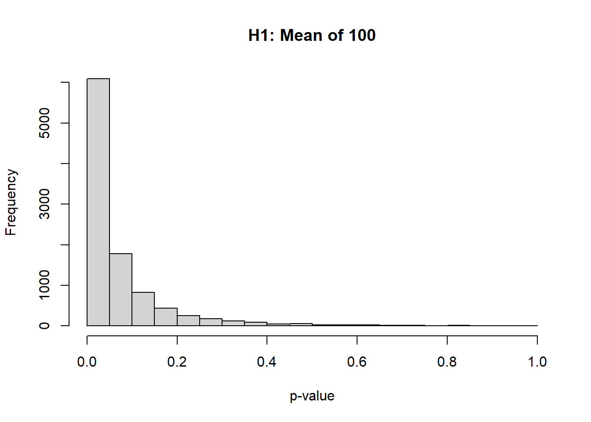

This page is part of the University of Colorado-Anschutz Medical Campus’ BIOS 6618 Recitation collection. To view other questions, you can view the BIOS 6618 Recitation collection page or use the search bar to look for keywords.
For this problem, we initially present power calculations via formulas/functions in R, before transitioning to how we could use simulation studies to estimate our statistical power. This is a great approach to starting to play around with simulation studies, where we have “known” solutions with existing functions or formulas, but want to see how close we can get via simulation. If we can structure these simulations correctly, we may be more confident for future problems where we don’t have an answer to necessarily compare to.
Power Calculations for Known and Unknown Standard Deviations
A clinical trial is planned to examine the bioavailability of twice per day beta carotene supplementation. Measurements are to be taken at baseline and 12 weeks later. Write out results by hand (i.e., show equations and work) for known s.d. and use functions in R for unknown s.d. Turn in your hand calculations/derivations, R code, and relevant output.
For the null hypothesis that the mean change in beta carotene is 0 mcg/dL and the alternative hypothesis that the mean change in beta carotene is 100 mcg/dL, with \(\sigma_{\text{change}} = 75\) mcg/dL, using \(\alpha = 0.05\) (two-sided) and 90% power, how many subjects would be needed? Assume two cases: known s.d. and unknown s.d.
A sample size of 6 would be needed to have 90% power with known SD.
Note that we can calculate \(Z_{1-0.1}=Z_{0.9}\) using qnorm(0.9) and \(Z_{0.975}\) using qnorm(0.975) (i.e., what is the value of \(Z\), our standard normal statistic, so that 90% and 97.5%, respectively, of the area under our PDF lies below it).
One-sample t test power calculation
n = 8.072323
delta = 100
sd = 75
sig.level = 0.05
power = 0.9
alternative = two.sided
A sample size of 9 would be needed to have 90% power when the SD is unknown.
Simulation Studies to Estimate Power
In some cases the test statistic you need to apply to a set of data is not of a standard form and so is not included as an option in R (or other sample size and power analysis software), or perhaps an exact formula does not exist for doing the power calculation. In these cases, simulation in R (or other software) can be used to estimate the power.
Assume normally distributed data for the change in beta carotene with \(\sigma_{\text{change}} = 75\) mcg/dL, \(n=5\), and significance level \(\alpha= 0.05\), with a one-sample two-sided t-test.
Scenario 1: Type I Error via Simulation
Scenario 1: Use simulation to show that the one-sample t-test has the correct significance level, that is that under the null hypothesis the test rejects about 5% of the time. Use 10,000 iterations and the seed value 2345.
Using a loop in R, carry out Scenario 1. Summarize your results in a brief paragraph.
We’ll explore a few strategies below to structuring simulations.
Strategy 1: The “Counter” Set-up
One strategy to estimate the power is to just keep track of how many times our p-value is less than \(\alpha\) by increasing a “counter” by 1 for each case.
Here we will loop through 10,000 simulated trials where \(n=5\), \(\sigma_{\text{change}} = 75\) mcg/dL, \(\alpha= 0.05\), and our difference is 0 with a one-sample, two-sided t-test. Since we are using a counter, the index i does not appear anywhere within our loop:
Code
# Set the seed and define our known/desired valuesset.seed(2345)n <-5mean <-0sd <-75numTrials <-10000alpha <-0.05# For this for loop, we will "count" the number of times we have p<0.05 for a t-test count<-0for(i in1:numTrials){ y <-rnorm(n,mean,sd) # simulate the data for the i-th simulation t <-t.test(y, mu =0, alternative ="two.sided") # conduct a one-sample, two-sided t-testif(t$p.value <0.05){ count <- count +1 }else{ count <- count }}# calculate the type I error rate (i.e., the proportion of simulations where we reject H0 incorrectly since we are simulating the null)count
[1] 498
Code
rejectionRate <- count/numTrials rejectionRate
[1] 0.0498
Our summary should detail the context of our simulation and denote the result:
The simulation results using 10,000 simulated data sets under the null hypothesis that the mean is 0, with a sample size of 5 and \(\sigma_{\text{change}}\) assumed to be 75 mcg/dL, indicate that we will reject the null hypothesis 4.98% of the time. This is very close to our desired type I error rate of 5%.
Strategy 2: The “Counter” Set-up, but Let’s Calculate our Own p-value by “Hand”!
If we really wanted to, we could also calculate our t-test p-value by hand by comparing our calculated t-score (\(t=\frac{\bar{x}-\mu_0}{s/\sqrt{n}}\)) to its corresponding distribution of \(t_{n-1}\). In R we can accomplish this with the pt(q=tscore, df=n-1) function (i.e., the CDF of the t-distribution at the given t-score).
When calculating the p-value from the t-score for a two-sided hypothesis test, we need to take the p-value and multiply by 2. However, if we have a positive t-score, then our calculated area under the curve (AUC) (i.e., our CDF from pt()) will be >0.5, and lead to a p-value >1 (i.e., impossible!). To account for this in our code example below, we can take the absolute value of our t-score calculation and multiply it by -1 to ensure we are estimating the AUC below and there have an estimate of the probability <0.5. Then we can multiply by 2 to account for the two sided nature of our test.
# Compare to the t-testt.test(y, mu =0, alternative ="two.sided")$p.value
[1] 0.673227
Code
# Set the seed and define our known/desired valuesset.seed(2345)n <-5mean <-0sd <-75numTrials <-10000alpha <-0.05# For this for loop, we will "count" the number of times we have p<0.05 for a t-test count<-0for(i in1:numTrials){ y <-rnorm(n,mean,sd) # simulate the data for the i-th simulation tstat <--1*abs( (mean(y)-0) / (sd(y)/sqrt(n)) ) tpval <-pt( tstat, df=n-1) *2if(tpval <0.05){ count <- count +1 }else{ count <- count }}# calculate the type I error rate (i.e., the proportion of simulations where we reject H0 incorrectly since we are simulating the null)count
[1] 498
Code
rejectionRate <- count/numTrials rejectionRate
[1] 0.0498
Strategy 3: Track Each Simulation p-value
We could also use the index, i, if we wanted to keep track of each p-value:
Code
# Set the seed and define our known/desired valuesset.seed(2345)n <-5mean <-0sd <-75numTrials <-10000alpha <-0.05# For this for loop, we will save the p-value from each t.test result pvec <-rep(NA, numTrials)for(i in1:numTrials){ y <-rnorm(n,mean,sd) # simulate the data for the i-th simulation t <-t.test(y, mu =0, alternative ="two.sided") # conduct a one-sample, two-sided t-test pvec[i] <- t$p.value}# check pvechead(pvec)
# calculate the type I error rate (i.e., the proportion of simulations where we reject H0 incorrectly since we are simulating the null)mean( pvec <0.05 )
[1] 0.0498
We see here we have the same estimated “power” (really the type I error rate since we’re simulating the assumed null mean value of 0).
We can also visualize in this approach the distribution of our p-values under the null:
Code
hist( pvec, xlab='p-value' )

We can note it is pretty uniform under the null.
Scenario 2: Power via Simulation (i.e., The Alternative Hypothesis Case(s))
To calculate the results under the alternative we can just modify the above code for either strategy to replace mean <- 0 with mean <- 100.
One interesting thing to note, is that the distribution of the p-values will no longer be uniform:
Code
# Set the seed and define our known/desired valuesset.seed(2345)n <-5mean <-100# CHANGED TO 100 FROM 0sd <-75numTrials <-10000alpha <-0.05# For this for loop, we will save the p-value from each t.test result pvec <-rep(NA, numTrials)for(i in1:numTrials){ y <-rnorm(n,mean,sd) # simulate the data for the i-th simulation t <-t.test(y, mu =0, alternative ="two.sided") # conduct a one-sample, two-sided t-test pvec[i] <- t$p.value}hist( pvec, xlab='p-value', main='H1: Mean of 100' )

We could also use our “counter” approach above:
Code
# Set the seed and define our known/desired valuesset.seed(2345)n <-5mean <-100# CHANGED TO 100 FROM 0sd <-75numTrials <-10000alpha <-0.05# For this for loop, we will "count" the number of times we have p<0.05 for a t-test count<-0for(i in1:numTrials){ y <-rnorm(n,mean,sd) # simulate the data for the i-th simulation t <-t.test(y, mu =0, alternative ="two.sided") # conduct a one-sample, two-sided t-testif(t$p.value <0.05){ count <- count +1 }else{ count <- count }}# calculate the power (since we aren't simulating the null)count
[1] 6087
Code
rejectionRate <- count/numTrials rejectionRate
[1] 0.6087
Comparison of Calculating Type I Error Rates and Power from Simulation Studies
You may be wondering, how could we use nearly identical code with the exception of changing mean <- 0 to mean <- 100 to estimate both the type I error rate and the statistical power? Let’s return to the four possible outcomes for our NHST (null hypothesis significance testing) case, but change the set-up a bit:
Reality (what we simulate)
Sample Result (the observed data analysis)
Connection to rejection rate (RR): \(p \le \alpha\)
Null Scenario (\(H_0\) true)
Fail to reject \(H_0\) (correct)
1 - RR
Null Scenario (\(H_0\) true)
Reject \(H_0\) (Type I Error)
RR
Alternative Scenario (\(H_0\) false)
Fail to reject \(H_0\) (Type II Error)
1 - RR
Alternative Scenario (\(H_0\) false)
Reject \(H_0\) (correct)
RR
We can see from the table above, that the rejection rate from your simulation can represent our type I error if you are simulating data assuming the null hypothesis is trueOR our power if we are simulating data where the null hypothesis is false.
Strictly speaking, there is only one null value, but potentially infinite alternative hypotheses. For example, in a one-sample t-test we might assume \(H_0 \colon \; \mu_0 = 0\). In this case, anything we simulate where our population mean isn’t equal to 0 (i.e., \(\mu \neq 0\)) is an alternative scenario!
The power will increase as our difference gets farther from the \(H_0\) (assuming we keep the same \(n\), effect size, and standard deviation):
Code
### SIMULATE DIFFERENCE OF ONLY 25, INSTEAD OF DESIRED 100 FROM PROBLEM# Set the seed and define our known/desired valuesset.seed(2345)n <-5mean <-25# CHANGED TO 10 FROM 0sd <-75numTrials <-10000alpha <-0.05# For this for loop, we will "count" the number of times we have p<0.05 for a t-test count<-0for(i in1:numTrials){ y <-rnorm(n,mean,sd) # simulate the data for the i-th simulation t <-t.test(y, mu =0, alternative ="two.sided") # conduct a one-sample, two-sided t-testif(t$p.value <0.05){ count <- count +1 }else{ count <- count }}rejectionRate25 <- count/numTrials rejectionRate25
[1] 0.09
Code
### SIMULATE DIFFERENCE OF 250, INSTEAD OF DESIRED 100 FROM PROBLEM# Set the seed and define our known/desired valuesset.seed(2345)n <-5mean <-250# CHANGED TO 10 FROM 0sd <-75numTrials <-10000alpha <-0.05# For this for loop, we will "count" the number of times we have p<0.05 for a t-test count<-0for(i in1:numTrials){ y <-rnorm(n,mean,sd) # simulate the data for the i-th simulation t <-t.test(y, mu =0, alternative ="two.sided") # conduct a one-sample, two-sided t-testif(t$p.value <0.05){ count <- count +1 }else{ count <- count }}rejectionRate250 <- count/numTrials rejectionRate250
[1] 0.9999
In these cases, we that an expected response of only 25 mcg/dL has 9% power, 100 mcg/dL has 60.87% power, and 250 mcg/dL has 99.99% power.
Writing a Function Instead of a for Loop
We can also write a function instead of using a for loop. There are a host of ways we could accomplish this, so we’ll break down a few approaches.
The HW Hint
The homework hint from which this recitation problem comes gives one approach which completely would avoid using loops or apply statements to generate the data. Its skeleton looks like:
Code
#### Using a function in R ####compute_power =function(n, mean, sigma, numTrials, alpha){# Generate a matrix with each column being 1 simulated data set sample <-matrix(rdist(n*numTrials, mean, sigma), ncol=numTrials)# rdist should be replaced with desired distribution# Now, write out elements of the test statistic, e.g.# xbar <- apply(sample, 2, mean) #find mean of each column of matrix# variance <- apply(sample, 2, var) #find variance each column of matrix# df.num = n-1 #e.g. degrees of freedom might be needed# .# combine elements of test statistic, e.g. numerator, denominator# . test.stat =#test statistic formula based on elements above# Result of the function is the proportion of rejected hypothesis tests over all of the trialsreturn (mean(abs(test.stat) >=qdist((1-(alpha/2)), parameter of dist))) # qdist should be replaced with the quantile function for the sampling dist. of the test statistic }# Now, call the function with the arguments it needs - e.g. n, mean,# sd, number of trials, alphaset.seed(2345)compute_power(n, mean, sd, trials, alpha)#power value will show here
Let’s see one way we could utilize this function shell:
Code
compute_rejectionrate_v1 <-function(n, mean, sigma, numTrials, alpha){### Calculate the rejection rate for simulated data from a normal distribution using a one-sample t-test# n: sample size for each simulated data set# mean: mean to simulate from (0 = null hyp/type I error, anything else = alternative hyp/power)# sigma: standard deviation to simulate from# numTrials: number of simulated trials with n individuals to complete# alpha: the desired level of significance, type I error rate# First, simulate n times the number of trials worth of participants sim_dat <-rnorm(n = n*numTrials, mean = mean, sd = sigma)# Second, place the simulated data into a matrix with a column for each participant# NOTE: to reproduce our for loop, we want the data to be entered by column (i.e., fill column 1 with the first "n" observations, then column 2 with the next "n", etc.) sample <-matrix( sim_dat, ncol=numTrials )# Third, calculate the test statistic "by hand"# NOTE: since each column in sample is a simulated dataset, we need to somehow calculate the mean and variance for each column (here we use apply) xbar <-apply(sample, 2, mean) variance <-apply(sample, 2, var) df.num = n-1 test.stat <- (xbar-0)/sqrt(variance/n)# Finally, calculate the number of our test statistic exceeds the critical valuereturn(mean(abs(test.stat) >=qt((1-(alpha/2)), df.num))) }# Compare that our type I error matches beforeset.seed(2345)compute_rejectionrate_v1(n=5, mean=0, sigma=75, numTrials=10000, alpha=0.05)
[1] 0.0498
Code
# Check that power matches prior estimateset.seed(2345)compute_rejectionrate_v1(n=5, mean=100, sigma=75, numTrials=10000, alpha=0.05)
[1] 0.6087
This, in and of itself, is somewhat opaque since we define our arguments and then have to see what happens. We can check our code by running it outside the function:
Code
set.seed(2345)n <-5mean <-0sigma <-75numTrials <-10000alpha <-0.05# First, simulate n times the number of trials worth of participantssim_dat <-rnorm(n = n*numTrials, mean = mean, sd = sigma)length(sim_dat); head(sim_dat) # check length and first few values of data
# Second, place the simulated data into a matrix with a column for each participant# NOTE: to reproduce our for loop, we want the data to be entered by column (i.e., fill column 1 with the first "n" observations, then column 2 with the next "n", etc.)sample <-matrix( sim_dat, ncol=numTrials )sample[1:5,1:10] # see first 10 columns, i.e., trials
# Third, calculate the test statistic "by hand"# NOTE: since each column in sample is a simulated dataset, we need to somehow calculate the mean and variance for each column (here we use apply)xbar <-apply(sample, 2, mean)head(xbar)
We could also apply the t-test to each simulated data set and save the p-value (instead of saving or calculating the t-statistic) and calculate the proportion less than alpha:
Code
compute_rejectionrate_v2 <-function(n, mean, sigma, numTrials, alpha){### Calculate the rejection rate for simulated data from a normal distribution using a one-sample t-test# n: sample size for each simulated data set# mean: mean to simulate from (0 = null hyp/type I error, anything else = alternative hyp/power)# sigma: standard deviation to simulate from# numTrials: number of simulated trials with n individuals to complete# alpha: the desired level of significance, type I error rate# First, simulate n times the number of trials worth of participants sim_dat <-rnorm(n = n*numTrials, mean = mean, sd = sigma)# Second, place the simulated data into a matrix with a column for each participant# NOTE: to reproduce our for loop, we want the data to be entered by column (i.e., fill column 1 with the first "n" observations, then column 2 with the next "n", etc.) sample <-matrix( sim_dat, ncol=numTrials )# Third, calculate the t-test p-value for each column# NOTE: since each column in sample is a simulated dataset, we need to somehow calculate the mean and variance for each column (here we use sapply) pvec <-sapply( 1:numTrials, function(x) t.test( sample[,x])$p.value ) # Finally, calculate the number of our p-values less than alphareturn( mean( pvec <= alpha ) ) }# Compare that our type I error matches beforeset.seed(2345)compute_rejectionrate_v2(n=5, mean=0, sigma=75, numTrials=10000, alpha=0.05)
[1] 0.0498
Code
# Check that power matches prior estimateset.seed(2345)compute_rejectionrate_v2(n=5, mean=100, sigma=75, numTrials=10000, alpha=0.05)
[1] 0.6087
Here we see that this approach matches our earlier approaches.
Source Code
---title: "Power and Type I Error Rate Calculations via Simulation Studies"author: name: Alex Kaizer roles: "Instructor" affiliation: University of Colorado-Anschutz Medical Campustoc: truetoc_float: truetoc-location: leftformat: html: code-fold: show code-overflow: wrap code-tools: true---```{r, echo=F, message=F, warning=F}library(kableExtra)library(dplyr)```This page is part of the University of Colorado-Anschutz Medical Campus' [BIOS 6618 Recitation](/recitation/index.qmd) collection. To view other questions, you can view the [BIOS 6618 Recitation](/recitation/index.qmd) collection page or use the search bar to look for keywords.For this problem, we initially present power calculations via formulas/functions in R, before transitioning to how we could use simulation studies to estimate our statistical power. This is a great approach to starting to play around with simulation studies, where we have "known" solutions with existing functions or formulas, but want to see how close we can get via simulation. If we can structure these simulations correctly, we may be more confident for future problems where we don't have an answer to necessarily compare to.# Power Calculations for Known and Unknown Standard DeviationsA clinical trial is planned to examine the bioavailability of twice per day beta carotene supplementation. Measurements are to be taken at baseline and 12 weeks later. Write out results by hand (i.e., show equations and work) for known s.d. and use functions in R for unknown s.d. Turn in your hand calculations/derivations, R code, and relevant output.For the null hypothesis that the mean change in beta carotene is 0 mcg/dL and the alternative hypothesis that the mean change in beta carotene is 100 mcg/dL, with $\sigma_{\text{change}} = 75$ mcg/dL, using $\alpha = 0.05$ (two-sided) and 90% power, how many subjects would be needed? Assume two cases: known s.d. and unknown s.d. **Solution:***For the known standard deviation:*$\begin{aligned}n =& \; \frac{\sigma^2 \left( Z_{1-\beta} + Z_{1-\frac{\alpha}{2}} \right)^2}{(\mu_0 - \mu_1)^2} \\=& \; \frac{75^2(Z_{1-0.1} + Z_{1-\frac{0.05}{2}})^2}{(0-100)^2} \\=& \; \frac{75^2 (1.282 + 1.96)^2}{(100)^2} \\=& \; 5.91219\end{aligned}$A sample size of 6 would be needed to have 90% power with known SD.Note that we can calculate $Z_{1-0.1}=Z_{0.9}$ using `qnorm(0.9)` and $Z_{0.975}$ using `qnorm(0.975)` (i.e., what is the value of $Z$, our standard normal statistic, so that 90% and 97.5%, respectively, of the area under our PDF lies below it).*For the unknown standard deviation:*```{r}power.t.test(n=NULL, delta=100, sd=75, sig.level=0.05, power=0.90,type="one.sample", alternative="two.sided")```A sample size of 9 would be needed to have 90\% power when the SD is unknown.# Simulation Studies to Estimate PowerIn some cases the test statistic you need to apply to a set of data is not of a standard form and so is not included as an option in R (or other sample size and power analysis software), or perhaps an exact formula does not exist for doing the power calculation. In these cases, simulation in R (or other software) can be used to estimate the power. Assume normally distributed data for the change in beta carotene with $\sigma_{\text{change}} = 75$ mcg/dL, $n=5$, and significance level $\alpha= 0.05$, with a one-sample two-sided t-test.## Scenario 1: Type I Error via Simulation**Scenario 1:** Use simulation to show that the one-sample t-test has the correct significance level, that is that under the null hypothesis the test rejects about 5% of the time. Use 10,000 iterations and the seed value 2345. Using a loop in R, carry out Scenario 1. Summarize your results in a brief paragraph. We'll explore a few strategies below to structuring simulations.### Strategy 1: The "Counter" Set-upOne strategy to estimate the power is to just keep track of how many times our p-value is less than $\alpha$ by increasing a "counter" by 1 for each case.Here we will loop through 10,000 simulated trials where $n=5$, $\sigma_{\text{change}} = 75$ mcg/dL, $\alpha= 0.05$, and our difference is 0 with a one-sample, two-sided t-test. Since we are using a counter, the index `i` does not appear anywhere within our loop:```{r}# Set the seed and define our known/desired valuesset.seed(2345)n <-5mean <-0sd <-75numTrials <-10000alpha <-0.05# For this for loop, we will "count" the number of times we have p<0.05 for a t-test count<-0for(i in1:numTrials){ y <-rnorm(n,mean,sd) # simulate the data for the i-th simulation t <-t.test(y, mu =0, alternative ="two.sided") # conduct a one-sample, two-sided t-testif(t$p.value <0.05){ count <- count +1 }else{ count <- count }}# calculate the type I error rate (i.e., the proportion of simulations where we reject H0 incorrectly since we are simulating the null)countrejectionRate <- count/numTrials rejectionRate```Our summary should detail the context of our simulation and denote the result:The simulation results using 10,000 simulated data sets under the null hypothesis that the mean is 0, with a sample size of 5 and $\sigma_{\text{change}}$ assumed to be 75 mcg/dL, indicate that we will reject the null hypothesis `r 100*rejectionRate`% of the time. This is very close to our desired type I error rate of 5%.### Strategy 2: The "Counter" Set-up, but Let's Calculate our Own p-value by "Hand"!If we really wanted to, we could also calculate our t-test p-value by hand by comparing our calculated t-score ($t=\frac{\bar{x}-\mu_0}{s/\sqrt{n}}$) to its corresponding distribution of $t_{n-1}$. In R we can accomplish this with the `pt(q=tscore, df=n-1)` function (i.e., the CDF of the t-distribution at the given t-score).When calculating the p-value from the t-score for a *two-sided* hypothesis test, we need to take the p-value and multiply by 2. However, if we have a positive t-score, then our calculated area under the curve (AUC) (i.e., our CDF from `pt()`) will be >0.5, and lead to a p-value >1 (i.e., impossible!). To account for this in our code example below, we can take the absolute value of our t-score calculation and multiply it by -1 to ensure we are estimating the AUC *below* and there have an estimate of the probability <0.5. Then we can multiply by 2 to account for the two sided nature of our test.As a brief check:```{r}set.seed(2345)y <-rnorm(n=5, mean=0, sd=75)tstat <--1*abs( (mean(y)-0) / (sd(y)/sqrt(n)) ) # t-statistic is (sample mean - null mean) / SE(sample mean)2*pt( tstat, df=n-1) # our p-value# Compare to the t-testt.test(y, mu =0, alternative ="two.sided")$p.value``````{r}# Set the seed and define our known/desired valuesset.seed(2345)n <-5mean <-0sd <-75numTrials <-10000alpha <-0.05# For this for loop, we will "count" the number of times we have p<0.05 for a t-test count<-0for(i in1:numTrials){ y <-rnorm(n,mean,sd) # simulate the data for the i-th simulation tstat <--1*abs( (mean(y)-0) / (sd(y)/sqrt(n)) ) tpval <-pt( tstat, df=n-1) *2if(tpval <0.05){ count <- count +1 }else{ count <- count }}# calculate the type I error rate (i.e., the proportion of simulations where we reject H0 incorrectly since we are simulating the null)countrejectionRate <- count/numTrials rejectionRate```### Strategy 3: Track Each Simulation p-valueWe could also use the index, `i`, if we wanted to keep track of each p-value:```{r}# Set the seed and define our known/desired valuesset.seed(2345)n <-5mean <-0sd <-75numTrials <-10000alpha <-0.05# For this for loop, we will save the p-value from each t.test result pvec <-rep(NA, numTrials)for(i in1:numTrials){ y <-rnorm(n,mean,sd) # simulate the data for the i-th simulation t <-t.test(y, mu =0, alternative ="two.sided") # conduct a one-sample, two-sided t-test pvec[i] <- t$p.value}# check pvechead(pvec)# calculate the type I error rate (i.e., the proportion of simulations where we reject H0 incorrectly since we are simulating the null)mean( pvec <0.05 ) ```We see here we have the same estimated "power" (really the type I error rate since we're simulating the assumed null mean value of 0).We can also visualize in this approach the distribution of our p-values under the null:```{r}hist( pvec, xlab='p-value' )```We can note it is pretty uniform under the null.## Scenario 2: Power via Simulation (i.e., The Alternative Hypothesis Case(s))To calculate the results under the alternative we can just modify the above code for either strategy to replace `mean <- 0` with `mean <- 100`.One interesting thing to note, is that the distribution of the p-values will no longer be uniform:```{r}# Set the seed and define our known/desired valuesset.seed(2345)n <-5mean <-100# CHANGED TO 100 FROM 0sd <-75numTrials <-10000alpha <-0.05# For this for loop, we will save the p-value from each t.test result pvec <-rep(NA, numTrials)for(i in1:numTrials){ y <-rnorm(n,mean,sd) # simulate the data for the i-th simulation t <-t.test(y, mu =0, alternative ="two.sided") # conduct a one-sample, two-sided t-test pvec[i] <- t$p.value}hist( pvec, xlab='p-value', main='H1: Mean of 100' )```We could also use our "counter" approach above:```{r}# Set the seed and define our known/desired valuesset.seed(2345)n <-5mean <-100# CHANGED TO 100 FROM 0sd <-75numTrials <-10000alpha <-0.05# For this for loop, we will "count" the number of times we have p<0.05 for a t-test count<-0for(i in1:numTrials){ y <-rnorm(n,mean,sd) # simulate the data for the i-th simulation t <-t.test(y, mu =0, alternative ="two.sided") # conduct a one-sample, two-sided t-testif(t$p.value <0.05){ count <- count +1 }else{ count <- count }}# calculate the power (since we aren't simulating the null)countrejectionRate <- count/numTrials rejectionRate```## Comparison of Calculating Type I Error Rates and Power from Simulation StudiesYou may be wondering, how could we use nearly identical code with the exception of changing `mean <- 0` to `mean <- 100` to estimate both the type I error rate and the statistical power? Let's return to the four possible outcomes for our NHST (null hypothesis significance testing) case, but change the set-up a bit:| Reality (what we simulate) | Sample Result (the observed data analysis) | Connection to rejection rate (RR): $p \le \alpha$ ||:--------|:--------|:--------|| Null Scenario ($H_0$ true) | Fail to reject $H_0$ (*correct*) | 1 - RR || Null Scenario ($H_0$ true) | Reject $H_0$ (*Type I Error*) | RR || Alternative Scenario ($H_0$ false) | Fail to reject $H_0$ (*Type II Error*) | 1 - RR || Alternative Scenario ($H_0$ false) | Reject $H_0$ (*correct*) | RR |We can see from the table above, that the rejection rate from your simulation can represent our type I error *if you are simulating data assuming the null hypothesis is true* **OR** our power *if we are simulating data where the null hypothesis is false*.Strictly speaking, there is only one null value, but potentially infinite alternative hypotheses. For example, in a one-sample t-test we might assume $H_0 \colon \; \mu_0 = 0$. In this case, anything we simulate where our population mean isn't equal to 0 (i.e., $\mu \neq 0$) is an alternative scenario! The power will increase as our difference gets farther from the $H_0$ (assuming we keep the same $n$, effect size, and standard deviation):```{r}### SIMULATE DIFFERENCE OF ONLY 25, INSTEAD OF DESIRED 100 FROM PROBLEM# Set the seed and define our known/desired valuesset.seed(2345)n <-5mean <-25# CHANGED TO 10 FROM 0sd <-75numTrials <-10000alpha <-0.05# For this for loop, we will "count" the number of times we have p<0.05 for a t-test count<-0for(i in1:numTrials){ y <-rnorm(n,mean,sd) # simulate the data for the i-th simulation t <-t.test(y, mu =0, alternative ="two.sided") # conduct a one-sample, two-sided t-testif(t$p.value <0.05){ count <- count +1 }else{ count <- count }}rejectionRate25 <- count/numTrials rejectionRate25``````{r}### SIMULATE DIFFERENCE OF 250, INSTEAD OF DESIRED 100 FROM PROBLEM# Set the seed and define our known/desired valuesset.seed(2345)n <-5mean <-250# CHANGED TO 10 FROM 0sd <-75numTrials <-10000alpha <-0.05# For this for loop, we will "count" the number of times we have p<0.05 for a t-test count<-0for(i in1:numTrials){ y <-rnorm(n,mean,sd) # simulate the data for the i-th simulation t <-t.test(y, mu =0, alternative ="two.sided") # conduct a one-sample, two-sided t-testif(t$p.value <0.05){ count <- count +1 }else{ count <- count }}rejectionRate250 <- count/numTrials rejectionRate250```In these cases, we that an expected response of only 25 mcg/dL has `r 100 * rejectionRate25`% power, 100 mcg/dL has `r 100 * rejectionRate`% power, and 250 mcg/dL has `r 100 * rejectionRate250`% power.# Writing a Function Instead of a for LoopWe can also write a function instead of using a for loop. There are a host of ways we could accomplish this, so we'll break down a few approaches.## The HW HintThe homework hint from which this recitation problem comes gives one approach which completely would avoid using loops or apply statements to generate the data. Its skeleton looks like:```{r eval=F}#### Using a function in R ####compute_power =function(n, mean, sigma, numTrials, alpha){# Generate a matrix with each column being 1 simulated data set sample <-matrix(rdist(n*numTrials, mean, sigma), ncol=numTrials)# rdist should be replaced with desired distribution# Now, write out elements of the test statistic, e.g.# xbar <- apply(sample, 2, mean) #find mean of each column of matrix# variance <- apply(sample, 2, var) #find variance each column of matrix# df.num = n-1 #e.g. degrees of freedom might be needed# .# combine elements of test statistic, e.g. numerator, denominator# . test.stat =#test statistic formula based on elements above# Result of the function is the proportion of rejected hypothesis tests over all of the trialsreturn (mean(abs(test.stat) >=qdist((1-(alpha/2)), parameter of dist))) # qdist should be replaced with the quantile function for the sampling dist. of the test statistic }# Now, call the function with the arguments it needs - e.g. n, mean,# sd, number of trials, alphaset.seed(2345)compute_power(n, mean, sd, trials, alpha)#power value will show here```Let's see one way we could utilize this function shell:```{r}compute_rejectionrate_v1 <-function(n, mean, sigma, numTrials, alpha){### Calculate the rejection rate for simulated data from a normal distribution using a one-sample t-test# n: sample size for each simulated data set# mean: mean to simulate from (0 = null hyp/type I error, anything else = alternative hyp/power)# sigma: standard deviation to simulate from# numTrials: number of simulated trials with n individuals to complete# alpha: the desired level of significance, type I error rate# First, simulate n times the number of trials worth of participants sim_dat <-rnorm(n = n*numTrials, mean = mean, sd = sigma)# Second, place the simulated data into a matrix with a column for each participant# NOTE: to reproduce our for loop, we want the data to be entered by column (i.e., fill column 1 with the first "n" observations, then column 2 with the next "n", etc.) sample <-matrix( sim_dat, ncol=numTrials )# Third, calculate the test statistic "by hand"# NOTE: since each column in sample is a simulated dataset, we need to somehow calculate the mean and variance for each column (here we use apply) xbar <-apply(sample, 2, mean) variance <-apply(sample, 2, var) df.num = n-1 test.stat <- (xbar-0)/sqrt(variance/n)# Finally, calculate the number of our test statistic exceeds the critical valuereturn(mean(abs(test.stat) >=qt((1-(alpha/2)), df.num))) }# Compare that our type I error matches beforeset.seed(2345)compute_rejectionrate_v1(n=5, mean=0, sigma=75, numTrials=10000, alpha=0.05)# Check that power matches prior estimateset.seed(2345)compute_rejectionrate_v1(n=5, mean=100, sigma=75, numTrials=10000, alpha=0.05)```This, in and of itself, is somewhat opaque since we define our arguments and then have to see what happens. We can check our code by running it outside the function:```{r}set.seed(2345)n <-5mean <-0sigma <-75numTrials <-10000alpha <-0.05# First, simulate n times the number of trials worth of participantssim_dat <-rnorm(n = n*numTrials, mean = mean, sd = sigma)length(sim_dat); head(sim_dat) # check length and first few values of data# Second, place the simulated data into a matrix with a column for each participant# NOTE: to reproduce our for loop, we want the data to be entered by column (i.e., fill column 1 with the first "n" observations, then column 2 with the next "n", etc.)sample <-matrix( sim_dat, ncol=numTrials )sample[1:5,1:10] # see first 10 columns, i.e., trials# Third, calculate the test statistic "by hand"# NOTE: since each column in sample is a simulated dataset, we need to somehow calculate the mean and variance for each column (here we use apply)xbar <-apply(sample, 2, mean)head(xbar)variance <-apply(sample, 2, var)head(variance) df.num = n-1test.stat <- (xbar-0)/sqrt(variance/n)head(test.stat)# Finally, calculate the number of our test statistic exceeds the critical valueqt((1-(alpha/2)), df.num)mean( abs(test.stat) >=qt((1-(alpha/2)), df.num) )```# Using p-values Instead of test statisticsWe could also apply the t-test to each simulated data set and save the p-value (instead of saving or calculating the t-statistic) and calculate the proportion less than alpha:```{r}compute_rejectionrate_v2 <-function(n, mean, sigma, numTrials, alpha){### Calculate the rejection rate for simulated data from a normal distribution using a one-sample t-test# n: sample size for each simulated data set# mean: mean to simulate from (0 = null hyp/type I error, anything else = alternative hyp/power)# sigma: standard deviation to simulate from# numTrials: number of simulated trials with n individuals to complete# alpha: the desired level of significance, type I error rate# First, simulate n times the number of trials worth of participants sim_dat <-rnorm(n = n*numTrials, mean = mean, sd = sigma)# Second, place the simulated data into a matrix with a column for each participant# NOTE: to reproduce our for loop, we want the data to be entered by column (i.e., fill column 1 with the first "n" observations, then column 2 with the next "n", etc.) sample <-matrix( sim_dat, ncol=numTrials )# Third, calculate the t-test p-value for each column# NOTE: since each column in sample is a simulated dataset, we need to somehow calculate the mean and variance for each column (here we use sapply) pvec <-sapply( 1:numTrials, function(x) t.test( sample[,x])$p.value ) # Finally, calculate the number of our p-values less than alphareturn( mean( pvec <= alpha ) ) }# Compare that our type I error matches beforeset.seed(2345)compute_rejectionrate_v2(n=5, mean=0, sigma=75, numTrials=10000, alpha=0.05)# Check that power matches prior estimateset.seed(2345)compute_rejectionrate_v2(n=5, mean=100, sigma=75, numTrials=10000, alpha=0.05)```Here we see that this approach matches our earlier approaches.